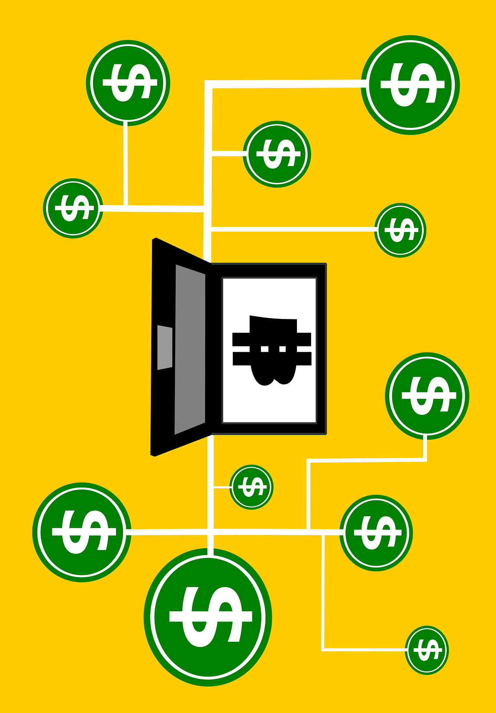

at (current page.center) ;
University of Victoria
Faculty of Engineering
ENGR 446: Milestone Report II: Engineering Analysis
David Li Computer Engineering V00818631
In partial fulfillment of the academic requirements of this academic course
Leveraging the largest public blockchains with smart contracts, grants enough computation power for quick transactions, while keeping transparency as a high priority. Reliability of decentralized applications is significant provided users are incentivized to support the shared network.
Decentralized and centralized topology
Comparing the process of purchasing a home with and without smart contracts will illustrate its simplicity and efficiency. Since the cost of transactions (gas) on ethereum is relatively low [1] and replicating software costs practically nothing, development is the foremost financial burden. Furthermore, cutting out the middlemen in this process (lawyers and real-estate agents) greatly reduces the financial burden while increasing transaction speed and transparency.
Smart Diagram for proposed approach
Creating decentralized applications is challenge because technologies are nascent, undergoing evolution and tools are in infancy.
Currently, centralized IT systems are vulnerable to “malicious attacks, software and hardware faults, human mistakes (e.g., software and hardware misconfigurations”) [2]. Decentralized systems have no single point of failure, improved security and are more transparent, however, efficient code is more important in smart contracts. As illustrated in [fig:DApp] a blockchain-server architecture model allows for developers to implement decentralized applications with smart contracts while maintaining the flexibility and simplicity of retrieving and sending information.
An example of server-blockchain architecture in a DAPP.
Usage on blockchain technologies is actively being explored in medical research [3] more transparency, real-estate and supply chains. Despite, the obvious advantages of decentralized and blockchain technologies, a lack of resources for unpopular materials may result in prolonged downloads. An equivalent anecdote is a inadequately seeded torrent results in intolerable download speeds. Whereas a traditional database only checks, writes and stores data once, a decentralized blockchain system require thousands of operations to write and store data, therefore the costs of maintaining a blockchain are substantial higher and only justifiable with increased utility/security [4].
Blockchain transactions are secure because that are immutable and decentralized. However, exploiting bugs in smart contracts are financially devastating [5] as fraudulent transactions cannot be reverted. Disconnects between software developers and security experts has resulted in 3 out of 4 “applications produced by software vendors fail to meet OWASP Top 10 standards” [6]. Although blockchain technologies increase underlying security and reliability, exploiting poorly coded and insecure smart contracts remains a major risk, and releasing open-source code allows hackers exploit flaws in the codebase before corrective processes are applied.
A ethereum key, which is randomly selected 256 digits [1], is very difficult to hack. A simple calculation illustrates the impracticalities of brute forcing for a 256 bit key. Assuming that a 1 exaflop (1018 calculations per second) 15 megawatts supercomputer [7] is used, electricity costs are 0.1326 per kWH [8].
$$\begin{aligned}
& 2^{256} = 1.1569 \times 10^{77} \text{decryptions} \\
& 10^{18} \frac{\text{decryptions}}{\text{second}} \times \frac{3.154 \times 10^7 second}{1 year} = 3.154 \times 10^{25} \frac{\text{decryptions}}{year} \\
& \text{Number of machines} = \frac{1.1569 \times 10^{77} }{3.154 \times 10^{25} } \text{years}= 3.66804 \times 10^{51} years
$$
Difficulty of brute forcing a 256-bit key
As shown in [security:fig2], if powerful quantum (1 peta teraflops) computers become commonplace existing 128 bit (27) are easily hacked and 256 bit (28) are insecure. According to the the Margolus–Levitin theorem processing power of computer can reach 6 × 1033 operations per second per joule. This indicates that existing 128 bit keys and even 256 bit keys are unsecure in a quantum computing age.
Typically, transactional costs are be categorized broadly as: [9]
Search and information costs (determining what is the suitable goods that is available on the market)
Bargaining costs (costs to come to acceptable agreement)
policing and enforcement costs (making sure other party sticks to term of contract)
Usage of smart contracts practically eliminate policing and enforcements costs as transactions are dictated by code, bargaining costs are reduced since the middlemen are removed, and reliable, immutable information on current and previous transactions are publicly displayed on the blockchain. Deploying a smart contract is inexpensive, however any changes in source code require the contract redeployment.
Flow Chart illustrating how smart contracts can simplify buying a home
As specified in [10], the process of purchasing a home can take up to a month, however by using smart contracts, friction between parties will be reduced, the transactions are more transparent and occur much quicker. Writing data to the blockchain is slower than a traditional database, however usage of side-chains (separate blockchain that enables fast transactions without clogging up the main network) can greatly reduce transaction completion time [11]. For instance, inserting information info a database is an order of magnitude in milliseconds, but writing to the blockchain requires a order of magnitude in seconds.
Decentralized systems are inherently more reliable, resilient against brute force attacks, and are more transparent. Even though immutable and irreversible transactions are advantageous, criminals leverage cryptocurrencies for illegal transfer of funds. This implies the ability to undo fraudulent or criminal activity is extremely important, but reversible transactions is an anti-pattern. For example EOS, a centralized blockchain platform, was criticized for freezing accounts without due process and community backing. [12]. In addition, centralized systems require users to trust vendors and oftentimes personal data usage lacks transparency. Currently, research into blockchain technologies are actively researched that can disrupt existing industries including finance, real-estate and supply chains.
Smart contracts are useful because that cannot be changed by the parties involved in the transactions, yet, in some cases such as criminal activity, the ability to reverse transactions or freeze accounts is extremely desirable. Deployment of a smart contract is inexpensive, however, development and maintenance costs for blockchain applications can be costly. This implies that transaction expenses decrease significantly, but running a blockchain node, ensuring high quality code for smart contracts is challenging and expensive. Decentralized applications are transparent because information is available in the publicly ledger and parties participating in a transaction cannot alter it. Overcomplicated code and bugs in smart contracts are severely detrimental because of malicious transactions by scammers or hackers.
As shown in Figure [smartContract], smart contract reduce complexity of transactions allowing buyers to directly interact with sellers. This illustrates how useful smart contracts are, but lack of legislation for blockchain technologies, consortiums unwilling to adopt decentralized applications (may prefer private blockchains), and ability for hackers to exploit bugs suggest transactions governed by code is decades away. Solutions to existing problems in blockchain technologies such as latency, immutable transactions and widespread acceptance by consortiums are addressed through innovations such as sidechains, centralized blockchain platforms like EOS and private blockchains infrastructure.
Overall, blockchain technologies allow for users to have a unique digital presence, securely transfer ownership of assets and avoid key shortcomings of centralized IT systems.
In 2008 bitcoin white paper [1] described a way to solve the double spending problem without a centralized body using blockchain. Although, the value of bitcoin (BTC) has grown exponentially, high computational and energy consumption in mining and slow performance [2]. Released in July 30, 2015, Ethereum, an open-source platform based on blockchain technology, distinguishes itself from bitcoin through faster transactions, unlimited processing capability for smart contract, and its network is optimized to support Decentralized Applications [3].
@r < !-0.5ptwidth 1pt >p5cm 2008 & Bitcoin White Paper
2009 & Bitcoin Genesis Block
2013 & 1 BTC = $ 31 USD
2013 & Ethereum White Paper
2015 & Ethereum Genesis Block
2015 & HyperLedger starts
2017 & Over 1000 different cryptocurrencies
2018 & AWS Blockchain Templates
Blockchain technology is revolutionizing the internet by establishing trust in shared data. [3]. Additionally, transactions recorded on the blockchain are practically impossible to remove or change. A decentralized application, or DApp are deployed on peer to peer networks such as Ethereum or on the cloud.
Traditional legal contracts are written to represent the contracting parties. In a smart contract, self-executing source code is used to automatic transactions that are publicly available on the blockchain [3].
Illustrating how a smart contract works
The prominence of cryptocurrency and decentralized applications suggests usage of smart contracts will experience explosive growth.
Currently commonplace transactions require days to process and for parties verify correctness. For example to purchase houses, a plethora of steps are required, one must interactive with lawyers, real-estate agents, home inspector, buy insurance and shop for a mortgage.
Leveraging existing blockchain technologies can automatic the majority of steps and cut out the middlemen, resulting in buyers conversing directing with sellers.
The aims of this project are to develop a decentralized blockchain system that:
Reduce cost of transactions by at least 50% from removing middlemen.
Improve transparency in software systems through augmented accessibility and understandability.
Has increased reliability and more secure than traditional systems.
The regulatory uncertainty and impact of future regulations on blockchain technologies such as smart contracts will not be investigated. In addition, criminal usage of cryptocurrencies to avoid taxation and legal repercussions are beyond the scope of this report.
Public blockchains are large distributed networks that are run through a native token such as bitcoin or ether. Anyone can participate and the community maintains its open-source code. The two largest public blockchains are Ethereum and Bitcoin. They are open for anyone to participate at any level and have open-source code that their community maintains.
Permissioned blockchains define role based access control for individuals in the network and uses native tokens. HyperLedger Composer, an open-source framework for permissioned blockchains, is used for smart contracts and for blockchain application development [4]. One use case is an accounting system that calculates payment, while hiding that information from unrelated organizations.
Architecture of Hyperledger composer
Private blockchains membership is tightly controlled and lacks a native token. Useful for consortiums with trusted associates and exchanging confidential information, however, less powerful because it is supported by limited private resources. Large organizations such as governments will likely use these extensively.
Determining which platform is best for smart contracts should be done using a weighted decision matrix, based on the particular application. For internal processes such as supply chains, a private blockchain makes sense (data cannot be changed) and cryptographic auditing with known identities (public keys). For a trustless system that verifies every transaction, using a public blockchain is essential. In comparison, role-based access control is feasible by using a permissioned blockchain. Despite the slow speed of the public blockchain, innovations such as side chains enable quick transactions and are used in decentralized game development [5]. A permissioned blockchain allows role based access control which is essential in business applications. One example is to prevent unrelated parties from viewing other’s data. Furthermore, smart contracts allow buyers and sellers exchange money, property, shares, or anything of value in a transparent, conflict-free way while avoiding the services of a middleman. This allows validation of complex transactions swiftly while maintaining transparency.
D E A B C & &
& & & &
speed and latency & 5 & 7 & 7 & 6
scalability & 5 & 9 8 & 7 & 4
security and immutablity & 3 & 7 & 8.5 & 9
storage capacity & 4 & 9 & 9 & 6
transparency & 3 & 9 & 7 & 5
& 21 & 41.6 & 38.5 & 30
A decentralized system (peer to peer) has many advantages over a conventional centralized network including no single points of failure, cheaper distribution (servers are expensive), faster upload speeds and improved security. In addition, irreversible and immutable transactions are both an advantage and disadvantage. For example, an amateur coder killed the contract that allowed users to transfer Ether for the Parity Ethereum Wallet, rendering 150 to 300 million dollars completely useless [6]. Overall, the public blockchain with access to substantial collective resources is most viable in terms of scalability and transparency, however, institutes may prefer implementing permissioned or private blockchains internally for extended security and privacy.
[1] “Bitcoin white paper.” https://bitcoin.org/bitcoin.pdf.
[2] S. Elnaj, “The problems with bitcoin and the future of blockchain.” https://www.forbes.com/sites/forbestechcouncil/2018/03/29/the-problems-with-bitcoin-and-the-future-of-blockchain.
[3] “Ethereum white paper.” https://github.com/ethereum/wiki/wiki/White-Paper.
[4] “Hyperledger composer overview.” https://www.hyperledger.org/wp-content/uploads/2017/05/Hyperledger-Composer-Overview.pdf.
[5] A. B. M. Corallo, “Loom network sdk for developers.” https://medium.com/loom-network/loom-sdk-for-developers-using-an-indexing-layer-for-lightning-fast-dapp-performance-b17f8ba25a3c.
[6] T. Maas, “Yes, this kid really just deleted 300 million by messing around with ethereum’s smart contracts.” https://hackernoon.com/yes-this-kid-really-just-deleted-150-million-dollar-by-messing-around-with-ethereums-smart-2d6bb6750bb9
[1] “Ethereum white paper.” https://github.com/ethereum/wiki/wiki/White-Paper.
[2] P. Smith, D. Hutchison, J. P. G. Sterbenz, M. Schöller, A. Fessi, M. Karaliopoulos, C. Lac, and B. Plattner, “Network resilience: A systematic approach,” IEEE Communications Magazine, vol. 49, no. 7, pp. 88–97, 2011.
[3] T. Nugent, D. Upton, and M. Cimpoesu, “Improving data transparency in clinical trials using blockchain smart contracts,” F1000Res, vol. 5, p. 2541, 2016.
[4] V. Buterin, “Ethereum scalability research and development subsidy programs.” https://blog.ethereum.org/2018/01/02/ethereum-scalability-research-development-subsidy-programs/ .
[5] T. Maas, “Yes, this kid really just deleted 300 million by messing around with ethereum’s smart contracts.” https://hackernoon.com/yes-this-kid-really-just-deleted-150-million-dollar-by-messing-around-with-ethereums-smart-2d6bb6750bb9.
[6] “How Do Vulnerabilities Get Into Software?”
[7] R. F. Service, “Design for u.s. Exascale computer takes shape,” Science, vol. 359, no. 6376, pp. 617–618, 2018 [Online]. Available: http://science.sciencemag.org/content/359/6376/617
[8] “Residential rates.” https://app.bchydro.com/accounts-billing/rates-energy-use/electricity-rates/residential-rates.html.
[9] C. J. Dahlman, “The problem of externality,” Journal of Law and Economics, vol. 22, no. 1, pp. 141–62, 1979 [Online]. Available: https://EconPapers.repec.org/RePEc:ucp:jlawec:v:22:y:1979:i:1:p:141-62
[10] “How long does home buying process take.” http://www.homes.com/blog/2016/03/how-long-does-the-home-buying-process-take/.
[11] A. B. M. Corallo, “Enabling blockchain innovations with pegged sidechains.” https://blockstream.com/sidechains.pdf.